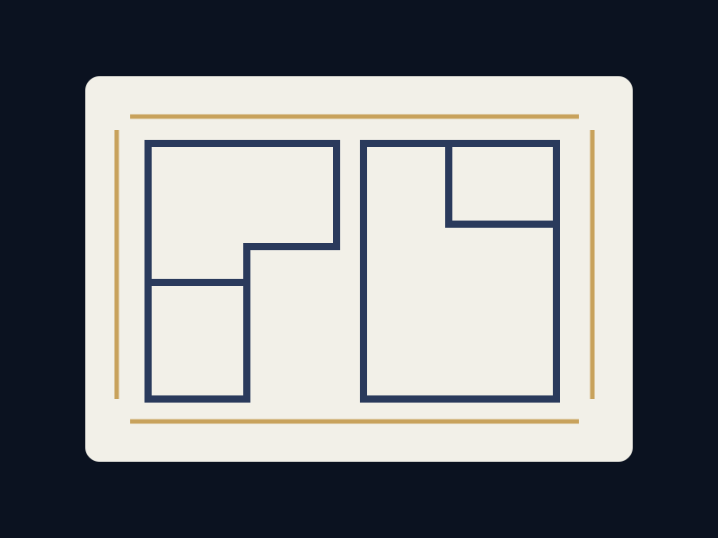

マンションリフォーム
間取り変更、水回り移設、内装全面改修まで。管理規約や躯体制約を踏まえて施工します。
埼玉県入間市 ｜ 内装・リフォーム・マンション改修
設計から施工、アフターサポートまで。解体から仕上げまで、一棟一棟に向き合う施工店です。
ABOUT
小林建設は、埼玉県入間市を拠点に活動する内装・リフォーム専門の施工店です。マンション・戸建ての改修工事を中心に、解体から下地、仕上げまでを一貫して手がけています。
大手にはできない小回りと、現場を知る職人ならではの目線。実際の建物の状態や暮らし方に合わせて、無駄のない工事をご提案します。
SERVICE
間取り変更、水回り移設、内装全面改修まで。管理規約や躯体制約を踏まえて施工します。
クロス・床材の張替えから、断熱・防音を含めた内装改修まで対応します。
部分解体、原状回復、スケルトン工事まで。廃材処分も含めてお見積りします。
DESIGN

間取りや寸法を確認しながら、仕上がりのイメージをすり合わせます。
細部まで納得いただけるよう、分かりやすくご説明します。
設計・施工・アフターサポートまで、一貫して伴走します。
FLOW
現地を拝見し、建物の状態とご要望をお伺いします。
工事範囲と費用を明確にしたお見積りをご提示します。
解体・下地工事から仕上げまで、現場を確認しながら進めます。
仕上がりをご確認いただき、引き渡しとなります。
TEAM
現場管理から設計、インテリア提案、営業、事務まで。それぞれの持ち場から住まいづくりを支えます。
会社を支える縁の下の力持ち。
安全第一で現場をまとめます。
図面の先にある理想を描きます。
空間を美しく心地よく整えます。
ご要望を最適な形へつなぎます。
CONTACT